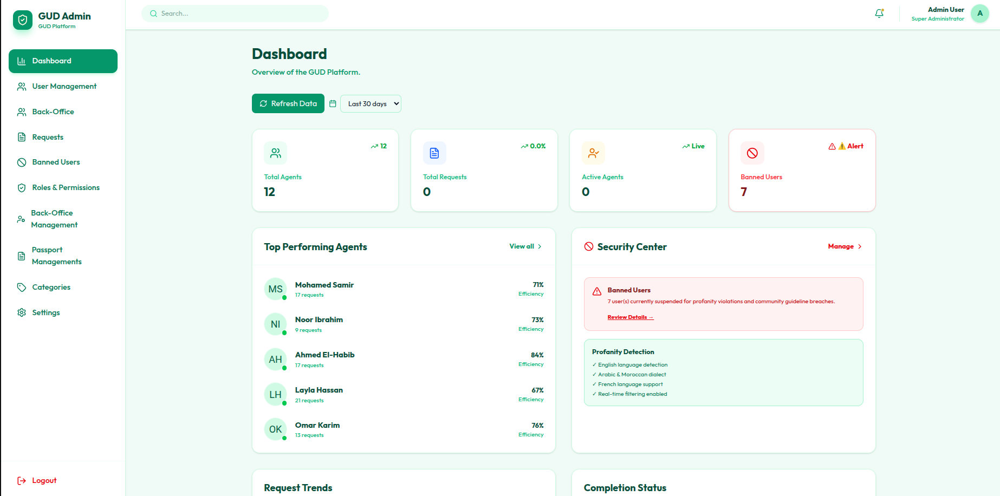
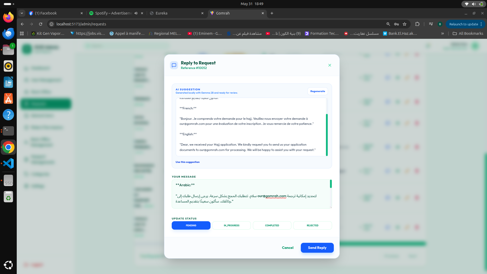
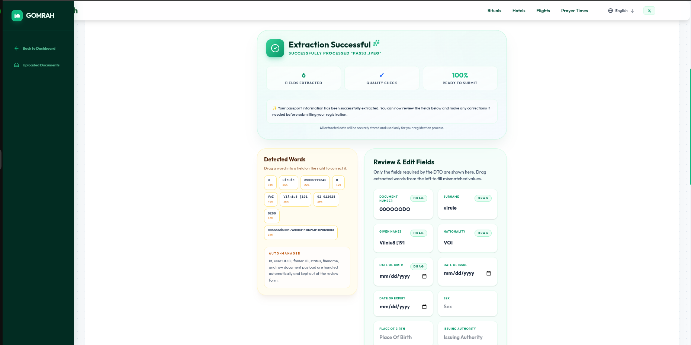
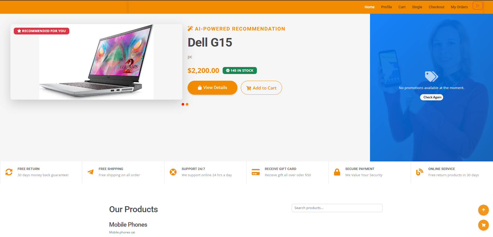
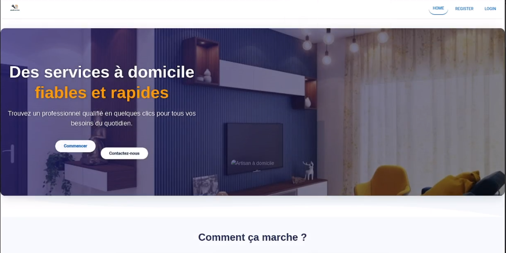
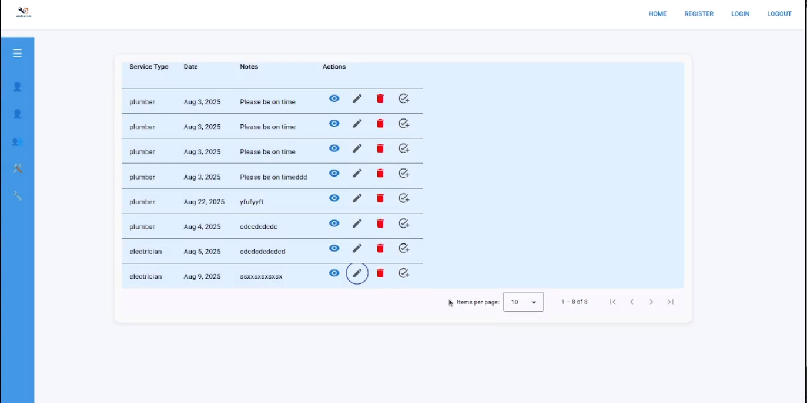
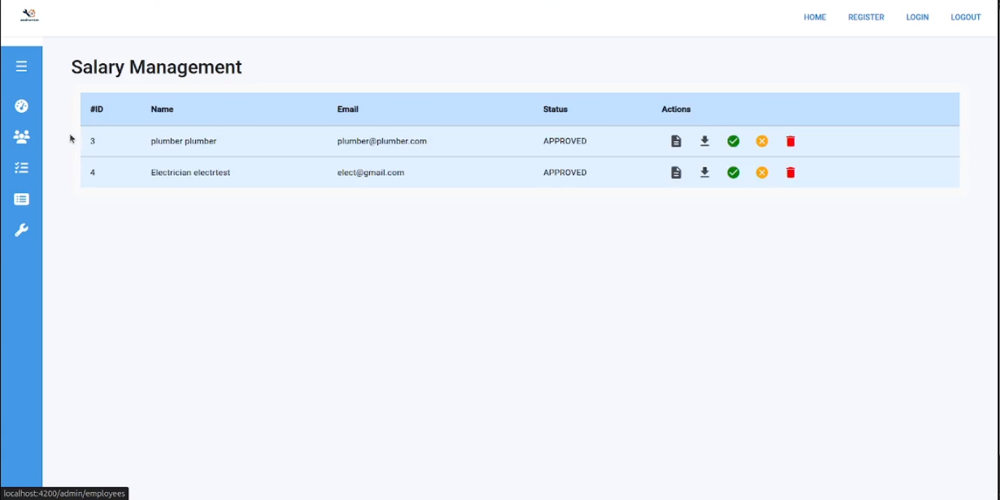

Selected work
Ideas, shaped into
useful products.
From AI-powered service platforms to everyday operational tools, these projects reflect how I approach product thinking, engineering, and delivery.
01 · AI · Platform · Full-stack
Gomrah
Unified Request Management Platform
An intelligent omnichannel platform that routes, enriches, and resolves citizen requests through AI-assisted workflows.



Spring Cloud microservices · API Gateway · Eureka service discovery · Apache Kafka event messaging
DeliveryDocker containers · Kubernetes / Minikube · Jenkins CI/CD · Keycloak IAM · Prometheus & Grafana
Gomrah normalizes email, WhatsApp, web forms, and API requests into a single workflow. An API Gateway provides a single secure entry point while Eureka handles service registration and discovery across the platform. Dockerized services are delivered through Jenkins CI/CD and deployed to Kubernetes. OCR, multilingual classification, RAG-powered replies, and confidence-based human escalation help teams process requests faster without losing the human touch.
02 · Microservices · E-commerce
BuyMe
Personalized commerce at scale
A commerce platform combining modular services, intelligent segmentation, and a clear customer experience across web and mobile.



Spring Boot microservices · API Gateway · Eureka service discovery · Kafka asynchronous events
DeliveryDocker images · Jenkins CI/CD · Kubernetes deployment · Git-based release workflow
BuyMe is organized around independent services for catalog, orders, customers, inventory, and payments. The API Gateway centralizes routing and cross-cutting concerns, while Eureka enables resilient service discovery as services scale independently. Docker and Jenkins CI/CD keep builds and deployments repeatable, with Kubernetes-ready services for growth. AI-powered segmentation gives the experience a more personal feel while the architecture stays ready for growth.
03 · Marketplace · Real-time
Ala Dhemtk
Service management, made human
A service marketplace connecting clients, workers, and administrators through scheduling and live operational visibility.



04 · Desktop · POS
CALM
A calmer way to run service
A point-of-sale system designed around the fast, practical rhythm of restaurants and cafés.


Next step Let’s build